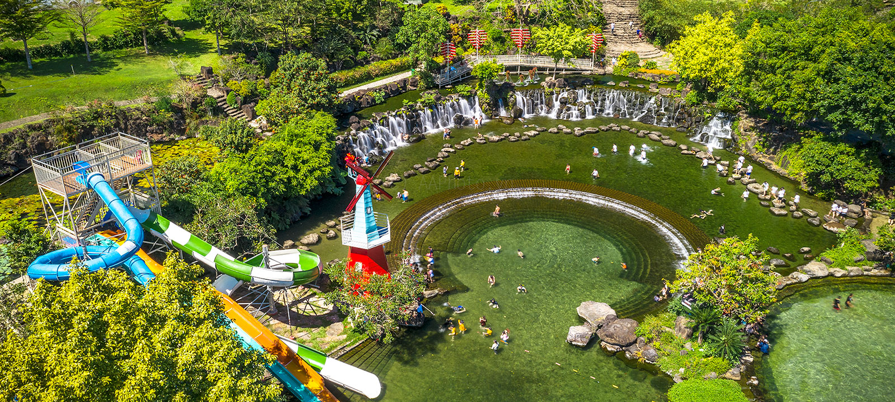
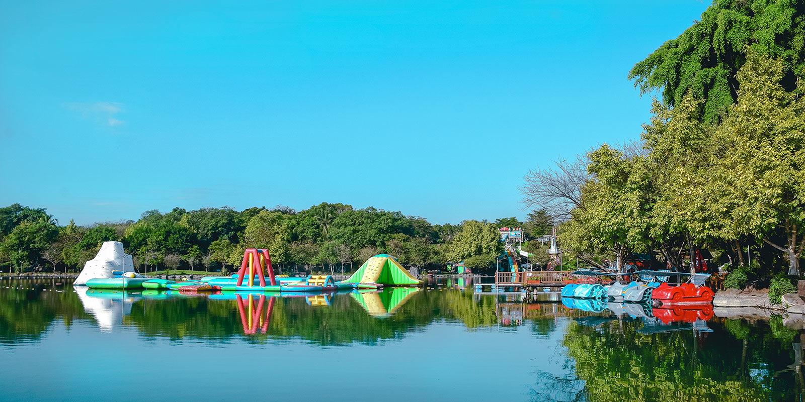
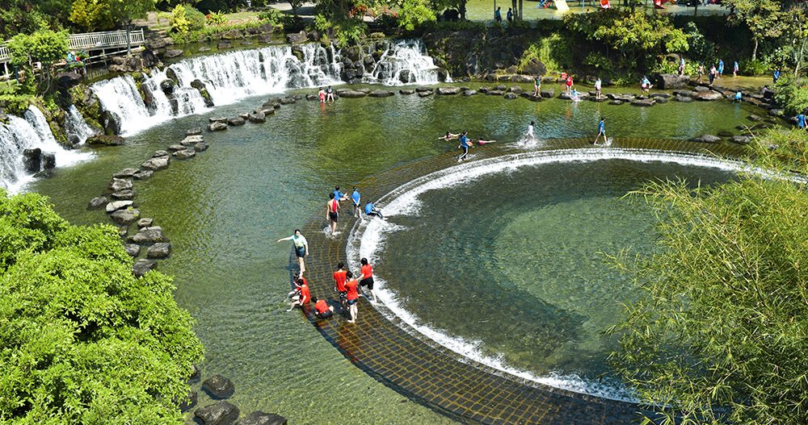
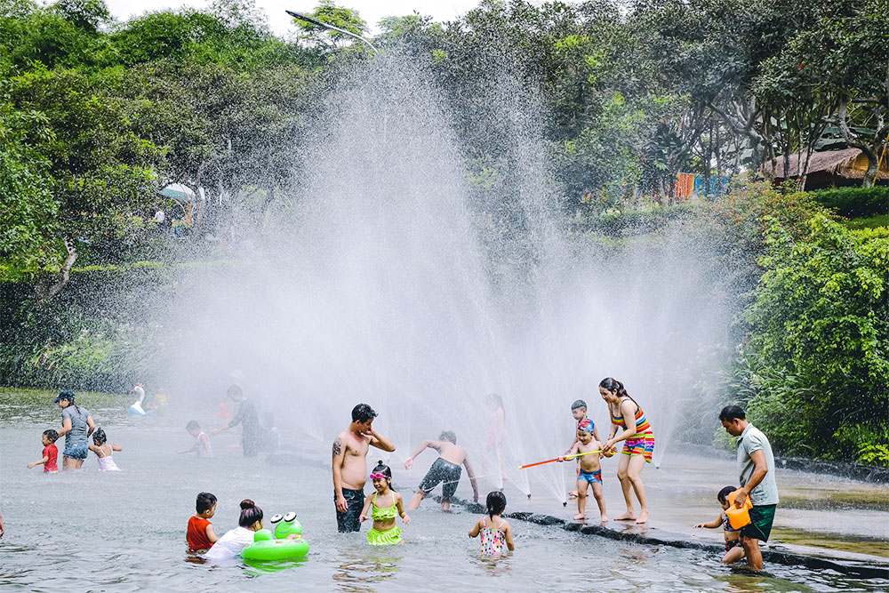
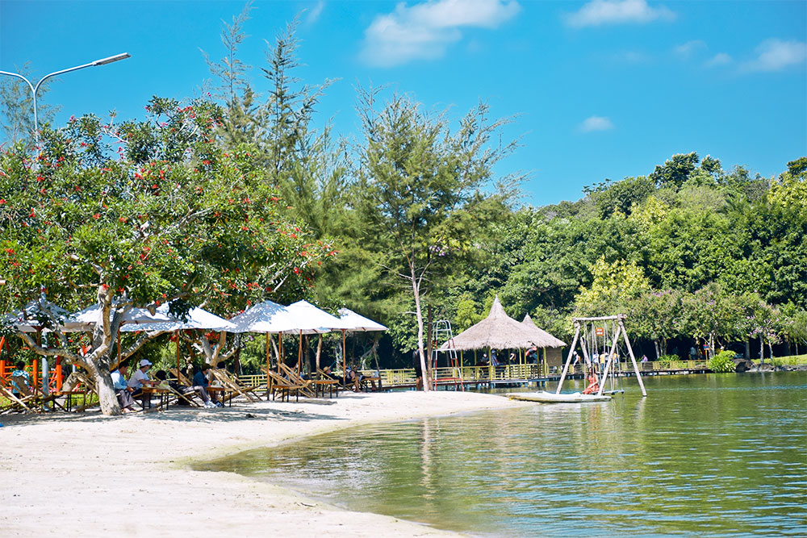

“ Biển trên rừng” là cảm nhận đầu tiên của du khách khi đến Suối Mơ.
Với diện tích mặt hồ trên 150,000 m2, mặt nước trong xanh quanh năm chảy ra từ các mạch nước ngầm, Suối Mơ là một món quà mà thiên nhiên ban tặng cho vùng bình nguyên núi rừng này.
Suối Mơ, bức tranh thiên nhiên hoàn hảo với phía xa xa là dãy núi thoáng ần hiện vào buổi sớm mai hay sương xuống lúc chiều tà. Những dòng suối nhỏ của vùng đất chịu nhiều ảnh hưởng của núi lửa này len lỏi qua các khe đá, đổ vào lòng hồ mát lạnh, ngọt lịm. Bàn tay khéo léo của con người cố gắng giữ lại nét tự nhiên, hoang sơ nhất có thể, đây là hồ nước ngọt tự nhiên được chặn dòng tạo thành hồ tắm lớn nhất trong khu vực Đông Nam Bộ khiến bạn tưởng như đang tắm ở Biển nước ngọt trong rừng.
Tiếng róc rách của những dòng suối nhỏ len lỏi qua khe đá dưới nắng chiều muộn hay tiếng thác đổ trong buổi sớm mai đưa bạn trở về miền tuổi thơ xa xăm mà giữa bộn bề lo toan của cuộc sống, bạn vô tình đánh mất từ lúc nào.
Công Viên Suối Mơ, nơi có hồ tắm thiên nhiên duy nhất mà bạn nhìn thấy những viên sỏi dưới chân, từng đàn cá suối say sưa bơi lội và vô tình chạm vào bạn, thiên nhiên và con người là một, khung cảnh bình yên đến lạ kỳ.
Một ngày thư thả trong tuần, bạn hãy đưa gia đình đến đây để tận hưởng những giây phút sum họp hay thỏa sức khám phá thiên nhiên vô tận nơi đây, Công Viên Suối Mơ thích hợp với mọi lứa tuổi: trẻ em tung tăng trong khu vực mực nước cạn, người lớn đam mê với những hoạt động thể thao dưới nước, chèo thuyền trên hồ, xe đạp nước, thỏa sức ngắm những cây thủy sinh mỏng manh uốn mình theo dòng nước, người già thư thái bên hồ sen hay tĩnh lặng dưới gốc đa già, cảm nhận cái lạnh từ từ khi chiều buông.
Vị trí địa lý thuận lợi, thiên nhiên ưu đãi, tổng diện tích hơn 300,000 m2, công viên Suối Mơ là nơi thích hợp cho các trường học, công ty tổ chức cắm trại, tổ chứ tiệc BBQ, rèn luyện kỹ năng sống. Suối Mơ cách vườn quốc gia Nam Cát Tiên - Khu dự trữ sinh quyển thế giới 25 km. Chỉ với 30 phút đi xe, chúng tôi cung cấp cho bạn dịch vụ tour tham quan rừng Bằng Lăng Bảy Ngọn, cây Tùng ngàn năm, cây Gõ bác Đồng hay thác Cự, Bến Trời, Mỏ Vẹt, mỗi nơi gắn liền với một câu chuyện thú vị về rừng già đại ngàn ngàn năm tuổi. Dưới tán cây Bằng Lăng hoa tím rợp trời, đạp xe trên những con đường mòn trong rừng để sống chậm lại là những trải nghiệm bạn không thể quên…
Đến với Suối Mơ và cùng chúng tôi bảo vệ thiên nhiên tươi đẹp cho mai sau.